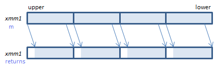
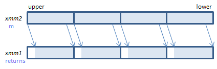
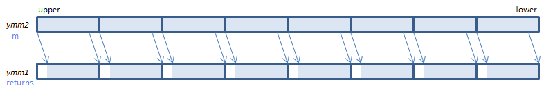
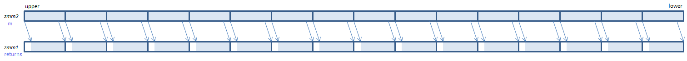

PSRLD - Packed Shift Right Logical Dword
PSRLD xmm1, imm8 (S2 the number of bits is specified by imm8.
__m128i _mm_srli_epi32(__m128i m, int count) the number of bits is specified by count.
PSRLD xmm1, xmm2/m128 (S2 the number of bits is specified by the lower QWORD of xmm2/m128.
__m128i _mm_srl_epi32(__m128i m, __m128i count) the number of bits is specified by the lower QWORD of count

For each DWORD, shift the bits to the right by the specified number of bits. Emptied upper bits are zeroed.
VPSRLD xmm1, xmm2, imm8 (V1 the number of bits is specified by imm8.
__m128i _mm_srli_epi32(__m128i m, int count) the number of bits is specified by count.
VPSRLD xmm1, xmm2, xmm3/m128 (V1 the number of bits is specified by the lower QWORD of xmm3/m128.
__m128i _mm_srl_epi32(__m128i m, __m128i count) the number of bits is specified by the lower QWORD of count.
VPSRLD xmm1{k1}{z}, xmm2/m128/m32bcst, imm8 (V5+VL the number of bits is specified by imm8.
__m128i _mm_mask_srli_epi32(__m128i s, __mmask8 k, __m128i m, unsigned int count) the number of bits is specified by count.
__m128i _mm_maskz_srli_epi32(__mmask8 k, __m128i m, unsigned int count) the number of bits is specified by count.
VPSRLD xmm1{k1}{z}, xmm2, xmm3/m128 (V5+VL the number of bits is specified by the lower QWORD of xmm3/m128.
__m128i _mm_mask_srl_epi32(__m128i s, __mmask8 k, __m128i m, __m128i count) the number of bits is specified by the lower QWORD of count.
__m128i _mm_maskz_srl_epi32(__mmask8 k, __m128i m, __m128i count) the number of bits is specified by the lower QWORD of count.

For each DWORD, shift the bits to the right by the specified number of bits. Emptied upper bits are zeroed.
VPSRLD ymm1, ymm2, imm8 (V2 the number of bits is specified by imm8.
__m256i _mm256_srli_epi32(__m256i m, int count) the number of bits is specified by count.
VPSRLD ymm1, ymm2, xmm3/m128 (V2 the number of bits is specified by the lower QWORD of xmm3/m128.
__m256i _mm256_srl_epi32(__m256i m, __m128i count) the number of bits is specified by the lower QWORD of count.
VPSRLD ymm1{k1}{z}, ymm2/m256/m32bcst, imm8 (V5+VL the number of bits is specified by imm8.
__m256i _mm256_mask_srli_epi32(__m256i s, __mmask8 k, __m256i m, unsigned int count) the number of bits is specified by count.
__m256i _mm256_maskz_srli_epi32(__mmask8 k, __m256i m, unsigned int count) the number of bits is specified by count.
VPSRLD ymm1{k1}{z}, ymm2, xmm3/m128 (V5+VL the number of bits is specified by the lower QWORD of xmm3/m128.
__m256i _mm256_mask_srl_epi32(__m256i s, __mmask8 k, __m256i m, __m128i count) the number of bits is specified by the lower QWORD of count.
__m256i _mm256_maskz_srl_epi32(__mmask8 k, __m256i m, __m128i count) the number of bits is specified by the lower QWORD of count.

For each DWORD, shift the bits to the right by the specified number of bits. Emptied upper bits are zeroed.
VPSRLD zmm1{k1}{z}, zmm2/m512/m32bcst, imm8 (V5 the number of bits is specified by imm8.
__m512i _mm512_srli_epi32(__m512i m, unsigned int count) the number of bits is specified by count.
__m512i _mm512_mask_srli_epi32(__m512i s, __mmask16 k, __m512i m, unsigned int count) the number of bits is specified by count.
__m512i _mm512_maskz_srli_epi32(__mmask16 k, __m512i m, unsigned int count) the number of bits is specified by count.
VPSRLD zmm1{k1}{z}, zmm2, xmm3/m128 (V5 the number of bits is specified by the lower QWORD of xmm3/m128.
__m512i _mm512_srl_epi32(__m512i m, __m128i count) the number of bits is specified by the lower QWORD of count.
__m512i _mm512_mask_srl_epi32(__m512i s, __mmask16 k, __m512i m, __m128i count) the number of bits is specified by the lower QWORD of count.
__m512i _mm512_maskz_srl_epi32(__mmask16 k, __m512i m, __m128i count) the number of bits is specified by the lower QWORD of count.

For each DWORD, shift the bits to the right by the specified number of bits. Emptied upper bits are zeroed.
x86/x64 SIMD Instruction List
Feedback